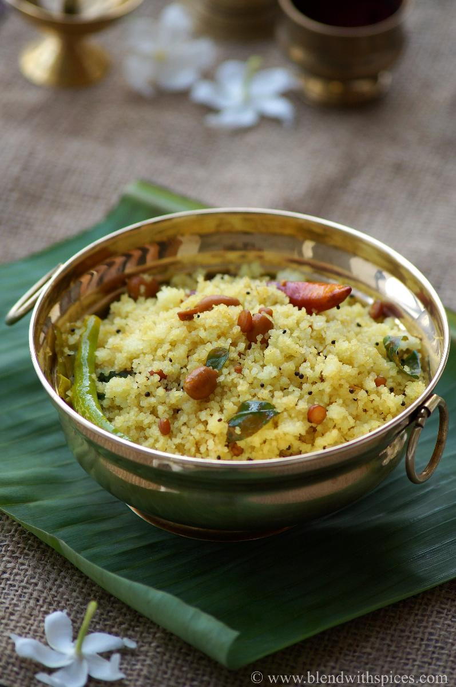

Pulihora

Description
This is one of the yummy telugu food which mostly seen as parasadams in temples.This recipe majorly contains rice with a flovour of tamarind or some uses lemon too!Note : This is just for educational purpose of web development! kindly note this point and don't take this recipe serious!
Ingredients
- Turmeric
- Peanut
- salt
- salt
- oil
- rice
- ginger
Steps(note:just for educational purpose i.e, web-devlopment)
- Cook the rice
- Soak the tamarind, fry soaked chana dal & mix cooked rice
- Roast peanuts, saute dals & add to the rice pan
- Prepare tamarind mixture
- Combine tamarind mixture to rice